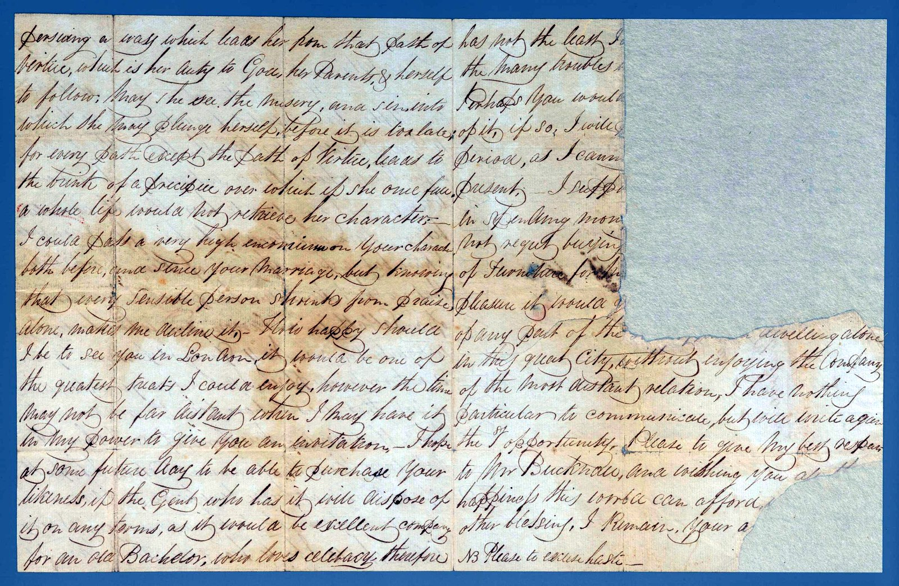

London, 31 August 1829
William writes to Sarah — now Mrs Bucknall — with news of their sister Jane, whose engagement to a man named Ford has been broken off. He is not sorry.
The right-hand column is torn along the edge, so the letter's close survives only in fragments.
I am glad to hear that the connection between Jane and Ford is broken off. I confess I have but a poor opinion of him.
Jane was Sarah's sister.
The reading is given first as written, then in plain modern paragraphs. Dotted words are uncertain; square brackets mark readings to confirm.
First page
In plain reading
London, 31st August 1829
Dear Sister,
Having written at some length to Father and Stephen, time will not permit me to do the same to you; but I could not return the box without sending a few lines, which if not interesting shall not be tedious.
I am glad to hear that the connection between Jane and Ford is broken off. I confess I have but a poor opinion of him. I was informed that a short time since he spent the greater part of a Sabbath in a tavern, and when he left was quite the worse for it. No. 11 Spring Street, Portman Square, is a poor dirty place; I do not know whether that was to have been the residence of Mr and the intended Mrs Ford — if so, I should not envy their matrimonial estate.

Second page — torn
In plain reading
Sorry indeed should I be to hear again that Jane is pursuing a way which leads her from that path of virtue which it is her duty to God, her parents, and herself to follow.
I could pass a very high compliment on your character, both before and since your marriage; but knowing that every sensible person shrinks from praise alone, I decline it. How happy should I be to see you in London! It would be one of the greatest treats I could enjoy. I hope one day to be able to purchase your likeness, if the gentleman who has it will part with it on any terms — it would be excellent company for an old bachelor who loves celibacy.
[The remainder of the letter is torn away at the right edge; only fragments survive — troubles, furniture, the great city, and his respects to Mr Bucknall.]
N.B. Please to excuse haste.
A note on this letter
This is the most damaged letter in the set: the right-hand column is torn clean away, so the close survives only in fragments. What remains is vivid — William’s low opinion of the tavern-going Ford, his relief at the broken engagement, and his wish to own a “likeness” of his married sister.
The Jane here is Sarah’s sister. Years later she married a Mr Browne, and it is her hand — signed “J. Browne” — that writes the “Friday Night” letter elsewhere in this collection.
Image reproduced from State Library Victoria, PAC-10009902. Reproduction is subject to the Library's permission and conditions of use.